Entering 2D Paint Mode
To start the 2D Paint mode simply click on the brush icon next to the mask name in Filter's properties.
Substance Alchemist 2020.2 "Udon" introduces a new AI Powered Image to Material process to transform a single image input into a fully PBR Material, an improved Material Creation Template, lot of workflow and usability improvements and new content such as new filters.
Release date: June 15, 2020
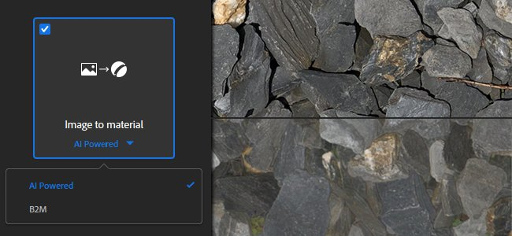
The Image to Material template has a new setting named AI Powered. This new setting provides better results to generate a high quality PBR material from a single input image.
The AI Powered setting uses machine learning to recognize shapes and objects and accurately generate height and normal information. This setting also includes the delighter filter to remove any shadows and highlights. This new setting works best with outdoor materials, as the algorithm was trained with grounds, pebbles, bark, stones, and other exterior based surfaces lit with natural lighting. Further updates will bring more flexibility and versatility of supported materials. For more details see the dedicated documentation page.
Here is a comparison of the height information generated by the two algorithms with their default values:
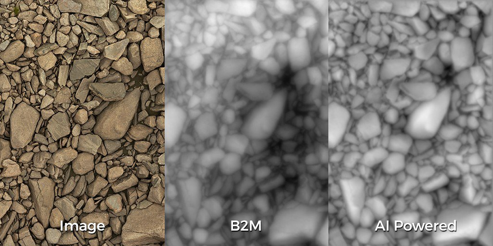
The AI Powered setting requires specific hardware. It is only available on Windows and Linux with an Nvidia GPU. See the technical requirements for more information.
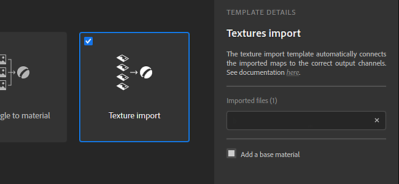
The image import pop-up window has been improved on several aspects. There is also a new type of process available named Texture Import.
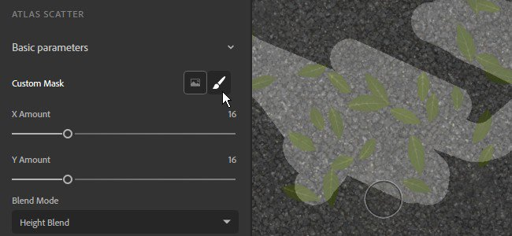
In this version it is now possible to paint and edit filters masks directly in the 2D view without having to import an external image. The painting automatically tiles to make possible the creation of seamless material.
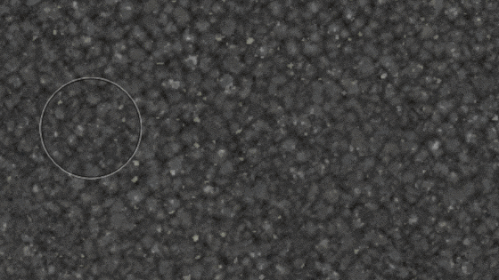
Entering 2D Paint Mode
To start the 2D Paint mode simply click on the brush icon next to the mask name in Filter's properties.
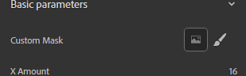
2D Paint Toolbar
When inside the paint mode, the 2D view will display a new toolbar at the top with the following functionalities:
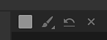
Keyboard Shortcuts
The paint mode support the following shortcuts to speed up the painting process:
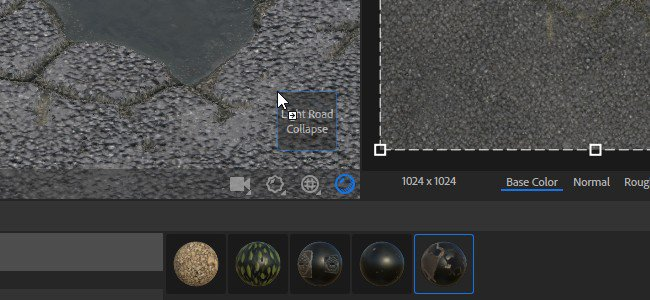
Two new creation modes have been added to take advantage of new types of Substance materials and ease-up their setup in the layer stack:
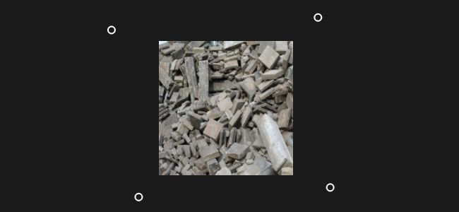
A new tool named Perspective Correction has been added to the filters list and allow to adjust or compensate the perspective of an image.
Perspective Correction
With this filter it is possible to fix defaults from scans and photography images to make them more suitable to material creation. The filter offers four control points which represent the initial corners of the image. Move the points to adjust/compensate the perspective.
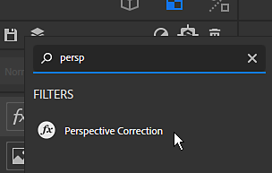
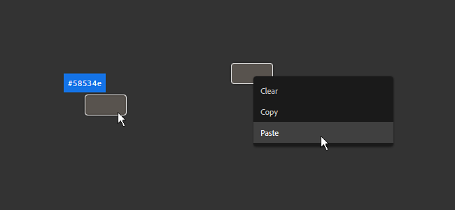
The color widget visible in the parameters panel now offers more controls:
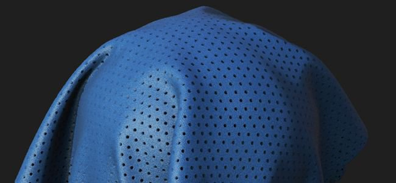
This version brings a lot of new and varied content: